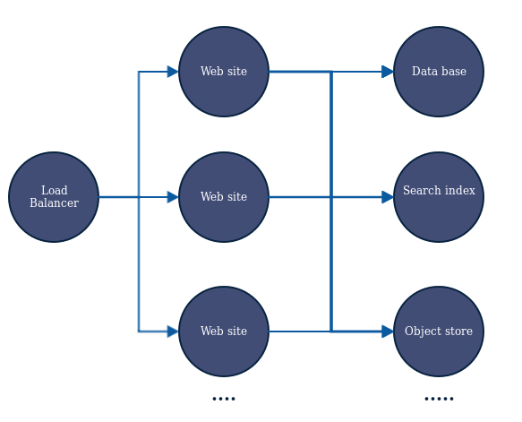
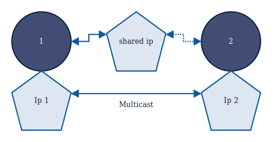
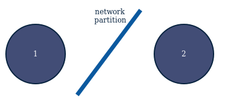
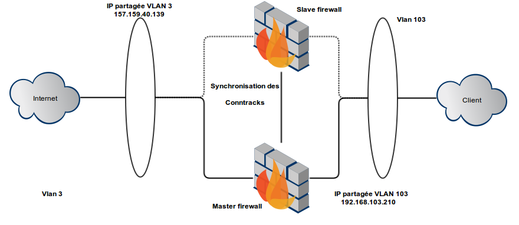
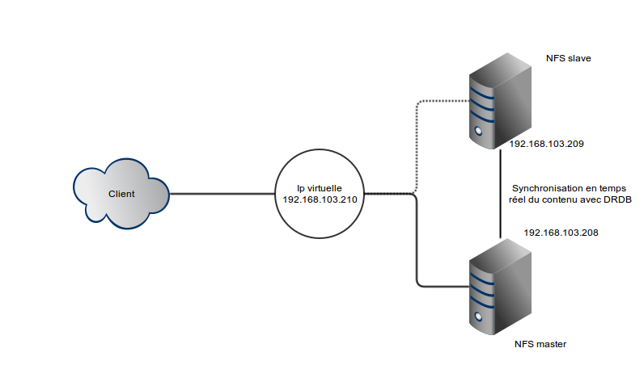

Load balancing and replication
Speaker : Benoit Tellier
Retrieve this presentation online : https://rawgit.com/Open-Up/openup02_13/master/presentation/index.html
And on GitHub
Objectives
- How to manage scale on stateless applications
- How to manage scale on stateful applications
- Set up load balancing
- Set up replication
- Know replication limits
- Understand "no point of failure" thinking
Playing with DNS
DNS round robin
mail IN A 192.168.0.4
IN A 192.168.0.5
IN A 192.168.0.6mail A 192.168.0.4
mail A 192.168.0.5
mail A 192.168.0.6mail A 192.168.0.5
mail A 192.168.0.6
mail A 192.168.0.4mail A 192.168.0.6
mail A 192.168.0.4
mail A 192.168.0.5mail A 192.168.0.4
mail A 192.168.0.5
mail A 192.168.0.6...
DNS round robin
- Pros : accross IPs
- Pros : easy to set up
- Cons : no health checks
- Cons : Cache
- Cons : TTL
DNS view
Goal : direct the client to the nearest servers
view "all" {
match-clients { any; };
include "/etc/bind/named.conf.minet.all";
notify-source 157.159.40.55 port 53;
};Stateless services
Stateless architecture
HAProxy
Fast and efficient load balancing
written in 2000 by Willy Tarreau
# In /etc/default/haproxy
ENABLED=1HAProxy
global
daemon
defaults
maxconn 10000
timeout connect 2s
timeout client 10s
timeout server 2s
frontend site_http
mode http
bind 157.159.40.136:80
default_backend site_http_b
backend site_http_b
mode http
balance roundrobin
server site1 192.168.103.166:80 check inter 10s
server site2 192.168.103.167:80 check inter 10sHAProxy "sticky"
balance sourceHAProxy and coockies
listen http_proxy :80
mode http
cookie SERVERID
balance source
server web1 192.168.103.166 cookie server01
server web2 192.168.103.167 cookie server02HA proy
- Pros : Health ckeck
- Pros : Modification applies instantly
- Cons : bandwith limitation + single IP
- Cons : Adds latency
Failover
Stateless architecture
UCARP
Common Address Redundancy Protocol (CARP)
OpenBSD reaction to Virtual Router Redundancy Protocol (VRRP)
apt-get install ucarp iputils-arpingUCARP
allow-hotplug eth1
iface eth1 inet static
address 157.159.40.137
netmask 255.255.255.192
ucarp-vid 4
ucarp-vip 157.159.40.139
ucarp-password toto
ucarp-advskew 0
ucarp-advbase 1
ucarp-master yes
iface eth1:ucarp inet static
address 157.159.40.139
netmask 255.255.255.192
gateway 157.159.40.129n+1/2 problem
Replicating statefull services
What we will see
- Due to the hudge diversity of statefull services this session will be based on example :
- Memory : firewalls
- Disk : Any apllication
Firewall redoundancy
Firewall redoundancy
Need to synchronize conntrack
OpenBSD contributed conntrackd
conntrackd
Sync {
Mode ALARM {
RefreshTime 5
CacheTimeout 600
}
UDP {
IPv4_address 192.168.103.208
IPv4_Destination_Address 192.168.103.209
Port 3780
Interface eth0
Checksum on
}
}conntrackd
General {
Nice -20
HashSize 32768
HashLimit 131072
LogFile on
LockFile /var/lock/conntrack.lock
UNIX {
Path /var/run/conntrackd.ctl
Backlog 20
}
NetlinkBufferSize 2097152
NetlinkBufferSizeMaxGrowth 8388608
Filter From Userspace {
Protocol Accept {
TCP
ICMP
}
Address Ignore {
IPv4_address 127.0.0.1
IPv4_address 192.168.103.210
IPv4_address 157.159.40.139
IPv4_address 157.159.40.137
IPv4_address 192.168.103.209
IPv4_address 192.168.103.208
}
}
}DRBD
drbd
synchronize devices in /dev
apt-get install drbd8-utilsdrbd
resource aaa {
protocol C;
handlers {
pri-on-incon-degr "echo 'DRBD: primary requested but inconsistent!'";
pri-lost-after-sb "echo 'DRBD: primary requested but lost!'";
}
startup {
degr-wfc-timeout 10;
}
disk {
on-io-error detach;
}
net {
timeout 120;
connect-int 20;
ping-int 20;
max-buffers 4096;
max-epoch-size 4096;
ko-count 30;
cram-hmac-alg "sha1";
shared-secret "drdbTest1gKey";
}
syncer {
rate 100M;
al-extents 257;
}
on benwa-fw-1 {
device /dev/drbd0;
disk /dev/vdb;
address 192.168.103.208:7789;
meta-disk internal;
}
on benwa-fw-2 {
device /dev/drbd0;
disk /dev/vdb;
address 192.168.103.209:7789;
meta-disk internal;
}
}drbd
drbdadm create-md aaadrbdadm -- --overwrite-data-of-peer primary aaamkfs.ext4 /dev/drbd0